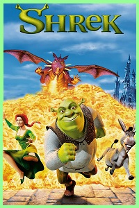

O filme estreado dia 22 de junho de 2001, fez um sucesso nos cinemas logo de cara o
o filme ganhou o Oscar de Melhor Animação e foi indicado a Categoria de Melhor Roteiro Adaptado.
O Filme ficou tão conhecido por sua marcante trilha sonora, e por sua piadas de duplo sentido
Em um pântano distante vive Shrek, um ogro solitário que vê, sem mais nem menos, sua vida ser
invadida por uma série de personagens de contos de fada, como três ratos cegos, um grande e
malvado lobo e ainda três porcos que não têm um lugar onde morar
Todos eles foram expulsos de seus lares pelo maligno Lorde Farquaad. Determinado a recuperar
a tranquilidade de antes, Shrek resolve encontrar Farquaad e com ele faz um
acordo:todos os personagens poderão retornar aos seus lares se ele e seu amigo
Burro resgatarem uma bela princesa que é prisioneira de um dragão.Porém, quando
Shrek e o Burro enfim conseguem resgatar a princesa logo eles descobrem que
seus problemas estão apenas começando.
Saiba mais sobre os Dubladores da obra.